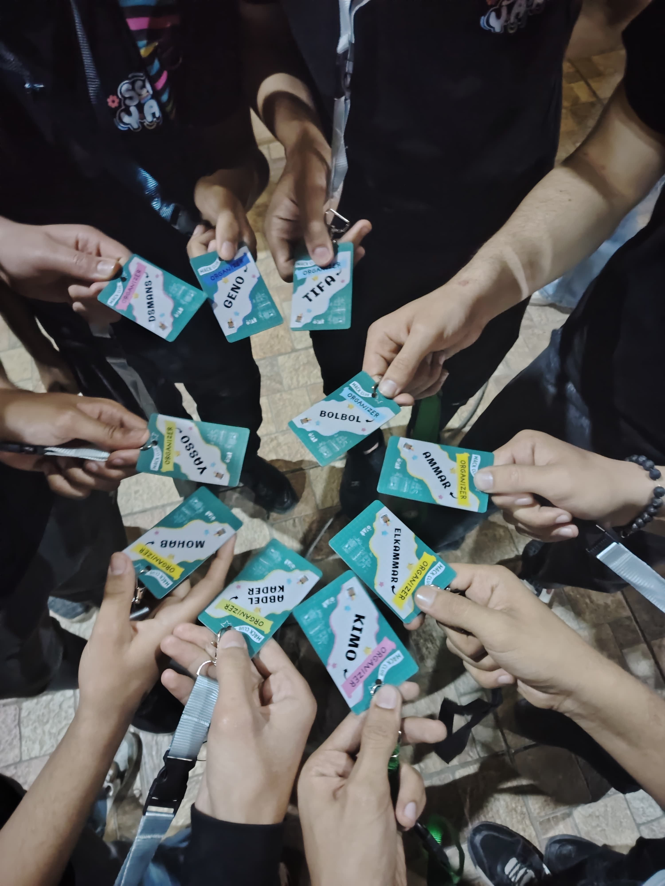
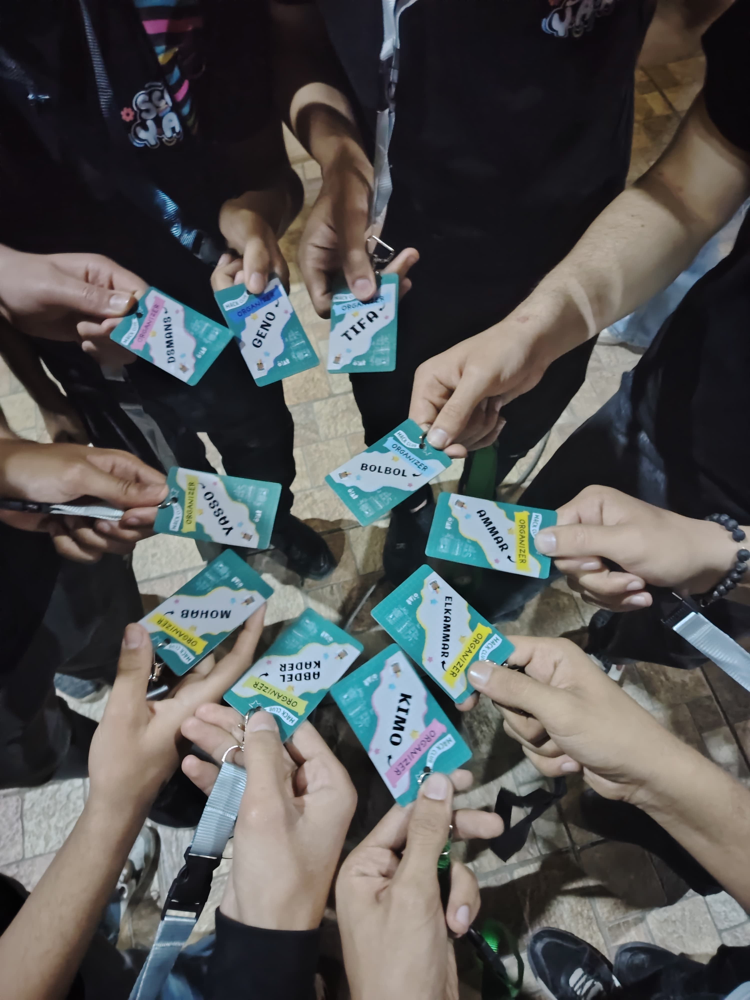

How this started ?
It all began with a Slack message from Deven announcing a new hackathon and inviting applications for organizers. Interestingly, this happened the same week I became president, making it both exciting and challenging to start organizing such a major hackathon right away.
What was most challenging in orgnaizing Scrapyard Giza ?
The Giza team has a reputation for hosting the largest hackathons in Hack Club. After Counterspell Giza became the top event worldwide among over 47 cities, with more than 281 sign-ups, I felt a strong responsibility to make this event even bigger and more memorable. This meant organizing for more participants, securing a larger venue, finding additional mentors, and handling many other details. It was definitely a challenging task.
Why it was special ?
If I had to choose one thing that made this journey special, it would be how everything came together at the very last minute. Interestingly, what stood out was not just the impressive number of sign-ups—444, making us #1 worldwide—or the number of projects, but the unexpected challenges we faced. For example, just three days before the event, we discovered an issue with printing the T-shirts in China and had to find a factory in Egypt to print 200 shirts in only three days. My friend Geno and I, both organizers, searched everywhere for a reliable place, and the T-shirts ended up arriving just two hours before the event! That was the craziest part (not to mention the posters and lanyards, which the shop delayed and delivered only four hours before the event). Even during the event, the internet suddenly went down for a while until we managed to fix it. Despite all these challenges, the amazing atmosphere and energy of the day made everything worthwhile. Here are some photos from that unforgettable experience.
 
